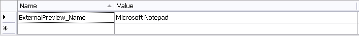

Implementing an External File Preview
In this chapter you will learn how to add a simple document preview function based on the standard Windows Notepad application.
Extend the File Type Component Builder
Our aim is to enable the file type plug-in to generate an ad-hoc preview in an external application. This allows users to view the file in its native format.
When processing DOC files, for example, Trados Studio launches Microsoft Word as external preview application. Since we are dealing with a simple text format, we can use a common text editor such Notepad as external preview application.
What makes implementing the external preview easy is the fact that the application logic required for generating an external preview already exists in our sample file type plug-in - to be more precise, in the file writer class, which you implemented in the previous chapter (see Implementing the File Writer). Therefore, all you need to do is register the external preview application in the File Type Component Builder.
First, we recommend that you add the name of the preview application to the resources file of your project properties. This is the application name that users will see when accessing the external preview menu command in Trados Studio.

Now add the method shown below to the File Type Component Builder. Note how the external preview application name is referenced. Also note that this implements the external preview both for the source and the target content.
IPreviewSet externalPreviewSet = previewFactory.CreatePreviewSet();
externalPreviewSet.Id = new PreviewSetId("ExternalPreview");
externalPreviewSet.Name = new LocalizableString(Resources.ExternalPreview_Name);
IApplicationPreviewType sourceAppPreviewType = previewFactory.CreatePreviewType<IApplicationPreviewType>() as IApplicationPreviewType;
if (sourceAppPreviewType != null)
{
sourceAppPreviewType.SourceGeneratorId = new GeneratorId("DefaultPreview");
sourceAppPreviewType.SingleFilePreviewApplicationId = new PreviewApplicationId("ExternalPreview");
externalPreviewSet.Source = sourceAppPreviewType;
}
IApplicationPreviewType targetAppPreviewType = previewFactory.CreatePreviewType<IApplicationPreviewType>() as IApplicationPreviewType;
if (targetAppPreviewType != null)
{
targetAppPreviewType.TargetGeneratorId = new GeneratorId("DefaultPreview");
targetAppPreviewType.SingleFilePreviewApplicationId = new PreviewApplicationId("ExternalPreview");
externalPreviewSet.Target = targetAppPreviewType;
}
previewFactory.GetPreviewSets(null).Add(externalPreviewSet);
Now change the File Type Component Builder to include the external preview. Here the Microsoft Notepad application is used by GenericExternalPreviewApplication
public IAbstractPreviewApplication BuildPreviewApplication(string name)
{
if (name == "PreviewApplication_ExternalPreview")
{
Sdl.FileTypeSupport.Framework.PreviewControls.GenericExteralPreviewApplication genericExteralPreviewApplication = new Sdl.FileTypeSupport.Framework.PreviewControls.GenericExteralPreviewApplication();
genericExteralPreviewApplication.ApplicationPath = @"c:\Windows\System32\notepad.exe";
return genericExteralPreviewApplication;
}
return null;
}
You will also need to add an assembly reference to Sdl.FileTypeSupport.Framework.PreviewControls.
Note
You can also pass an empty string to the ApplicationPath property. In this case the external preview will call the application that is registered in the OS for this particular file type.
When accessing the File > View In menu command of Trados Studio you should now see the following:

Note
This content may be out-of-date. To check the latest information on this topic, inspect the libraries using the Visual Studio Object Browser.